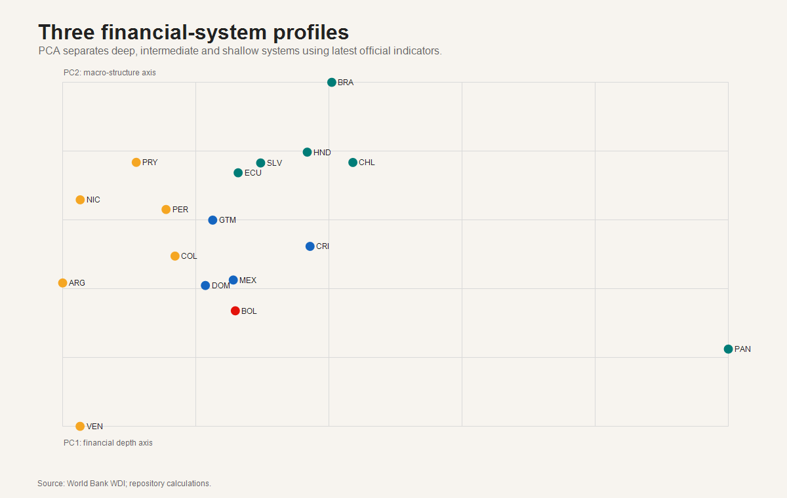
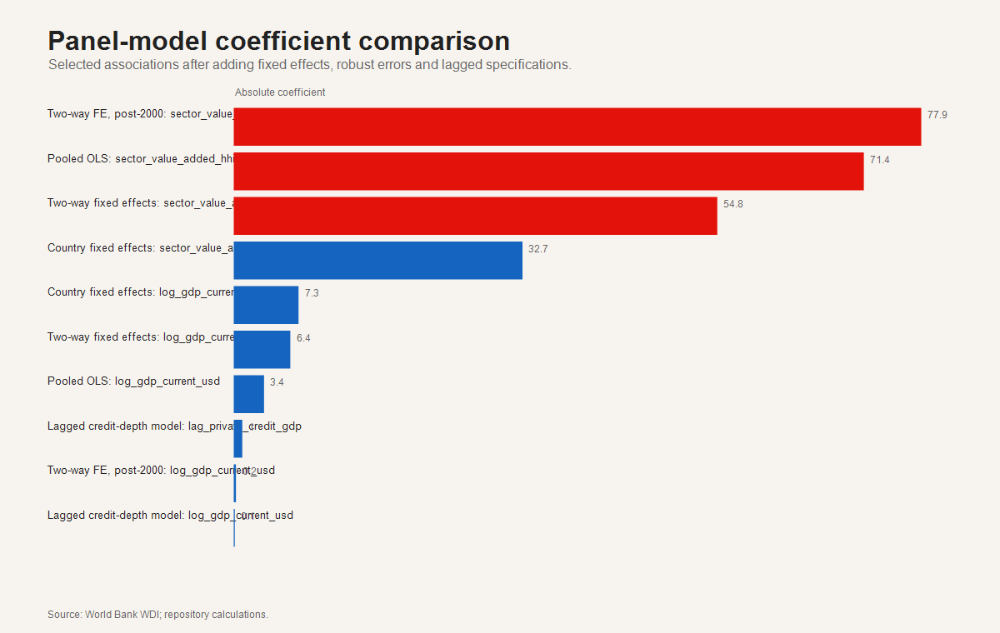
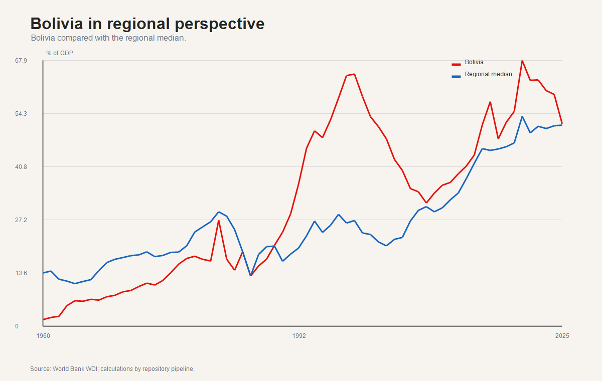

Latin America Financial Development Lab
Official public-data reconstruction with transparent limitations, doctoral-level diagnostics and publication-ready outputs.
Rows
1122
1122
Countries
17
17
Top composite index
Brazil
Brazil
Model specifications
5
5
Automated interpretation. Deep systems combine high credit depth with broader liquidity; shallow systems are not failures by definition, but indicate where institutional and credit-information constraints may bind.


Country Explorer
PCA & Clusters
Econometric Diagnostics
Models are diagnostic, not causal. The preferred interpretation emphasizes two-way fixed effects and robust uncertainty.
| model | term | estimate | std_error | t_stat | n | r_squared | se_type | note |
|---|---|---|---|---|---|---|---|---|
| Pooled OLS | intercept | -72.3154 | 47.3906 | -1.526 | 510 | 0.18 | country-cluster robust | Annual WDI panel; descriptive association, not causal identification. |
| Pooled OLS | gdp_growth_annual_pct | -0.3517 | 0.1901 | -1.85 | 510 | 0.18 | country-cluster robust | Annual WDI panel; descriptive association, not causal identification. |
| Pooled OLS | inflation_annual_pct | 0.0007 | 0.0025 | 0.276 | 510 | 0.18 | country-cluster robust | Annual WDI panel; descriptive association, not causal identification. |
| Pooled OLS | log_gdp_current_usd | 3.4295 | 2.2065 | 1.554 | 510 | 0.18 | country-cluster robust | Annual WDI panel; descriptive association, not causal identification. |
| Pooled OLS | sector_value_added_hhi | 71.3697 | 47.9456 | 1.489 | 510 | 0.18 | country-cluster robust | Annual WDI panel; descriptive association, not causal identification. |
| Country fixed effects | gdp_growth_annual_pct | -0.2519 | 0.141 | -1.787 | 510 | 0.352 | country-cluster robust | Annual WDI panel; descriptive association, not causal identification. |
| Country fixed effects | inflation_annual_pct | 0.0006 | 0.0026 | 0.247 | 510 | 0.352 | country-cluster robust | Annual WDI panel; descriptive association, not causal identification. |
| Country fixed effects | log_gdp_current_usd | 7.3304 | 1.3311 | 5.507 | 510 | 0.352 | country-cluster robust | Annual WDI panel; descriptive association, not causal identification. |
| Country fixed effects | sector_value_added_hhi | 32.7011 | 40.9241 | 0.799 | 510 | 0.352 | country-cluster robust | Annual WDI panel; descriptive association, not causal identification. |
| Two-way fixed effects | gdp_growth_annual_pct | 0.0052 | 0.2124 | 0.024 | 510 | 0.245 | Driscoll-Kraay style | Annual WDI panel; descriptive association, not causal identification. |
| Two-way fixed effects | inflation_annual_pct | 0.0006 | 0.0019 | 0.33 | 510 | 0.245 | Driscoll-Kraay style | Annual WDI panel; descriptive association, not causal identification. |
| Two-way fixed effects | log_gdp_current_usd | 6.4032 | 0.9353 | 6.846 | 510 | 0.245 | Driscoll-Kraay style | Annual WDI panel; descriptive association, not causal identification. |
| Two-way fixed effects | sector_value_added_hhi | 54.7608 | 39.4582 | 1.388 | 510 | 0.245 | Driscoll-Kraay style | Annual WDI panel; descriptive association, not causal identification. |
| Lagged credit-depth model | intercept | 0.0135 | 3.4255 | 0.004 | 527 | 0.925 | country-cluster robust | Annual WDI panel; descriptive association, not causal identification. |
| Lagged credit-depth model | lag_private_credit_gdp | 0.956 | 0.039 | 24.486 | 527 | 0.925 | country-cluster robust | Annual WDI panel; descriptive association, not causal identification. |
| Lagged credit-depth model | gdp_growth_annual_pct | -0.1343 | 0.0614 | -2.187 | 527 | 0.925 | country-cluster robust | Annual WDI panel; descriptive association, not causal identification. |
| Lagged credit-depth model | inflation_annual_pct | -0.001 | 0.0011 | -0.949 | 527 | 0.925 | country-cluster robust | Annual WDI panel; descriptive association, not causal identification. |
| Lagged credit-depth model | log_gdp_current_usd | 0.1146 | 0.1788 | 0.641 | 527 | 0.925 | country-cluster robust | Annual WDI panel; descriptive association, not causal identification. |
| Two-way FE, post-2000 | gdp_growth_annual_pct | -0.4583 | 0.1199 | -3.823 | 361 | 0.103 | Driscoll-Kraay style | Annual WDI panel; descriptive association, not causal identification. |
| Two-way FE, post-2000 | inflation_annual_pct | -0.0183 | 0.0547 | -0.335 | 361 | 0.103 | Driscoll-Kraay style | Annual WDI panel; descriptive association, not causal identification. |
| Two-way FE, post-2000 | log_gdp_current_usd | -0.24 | 1.6949 | -0.142 | 361 | 0.103 | Driscoll-Kraay style | Annual WDI panel; descriptive association, not causal identification. |
| Two-way FE, post-2000 | sector_value_added_hhi | 77.8732 | 13.331 | 5.842 | 361 | 0.103 | Driscoll-Kraay style | Annual WDI panel; descriptive association, not causal identification. |

Bolivia
Bolivia records 51.75% of GDP in latest private bank credit, 0.72 percentage points relative to the regional median.


Data Quality
| dataset | reconstructed | output | source | limitation |
|---|---|---|---|---|
| PanelCompleto | yes | data/processed/PanelCompleto.reconstructed.csv | World Bank WDI annual macro-financial panel | Equivalent annual panel, not exact lost monthly regulator merge. |
| CreditType | partial/equivalent | data/processed/CreditType.reconstructed.csv | World Bank WDI credit-depth indicators plus regulator-source download audit | No product-level regulator split unless original workbooks are manually harmonized. |
| EconomicSector | partial/equivalent | data/processed/EconomicSector.reconstructed.csv | World Bank WDI sector value-added indicators | Economic structure, not sectoral credit allocation. |
| Regulator raw sources | attempted | data/raw/public_sources and data/metadata/source_download_status.csv | Legacy country regulator URLs | Some official URLs changed, moved, or returned unavailable. |
| Country | iso3 | rank_equal | rank_credit_heavy | rank_stability_sensitive | max_rank_shift | interpretation |
|---|---|---|---|---|---|---|
| Argentina | ARG | 12 | 16 | 15 | 4 | Sensitive to weighting assumptions |
| Bolivia | BOL | 15 | 10 | 16 | 6 | Sensitive to weighting assumptions |
| Brazil | BRA | 1 | 1 | 1 | 0 | Stable ranking across weights |
| Chile | CHL | 2 | 2 | 2 | 0 | Stable ranking across weights |
| Colombia | COL | 10 | 13 | 11 | 3 | Sensitive to weighting assumptions |
| Costa Rica | CRI | 11 | 9 | 10 | 2 | Stable ranking across weights |
| Dominican Republic | DOM | 14 | 15 | 14 | 1 | Stable ranking across weights |
| Ecuador | ECU | 6 | 6 | 6 | 0 | Stable ranking across weights |
| El Salvador | SLV | 5 | 4 | 4 | 1 | Stable ranking across weights |
| Guatemala | GTM | 9 | 12 | 9 | 3 | Sensitive to weighting assumptions |
| Honduras | HND | 3 | 3 | 3 | 0 | Stable ranking across weights |
| Mexico | MEX | 13 | 14 | 13 | 1 | Stable ranking across weights |
| Nicaragua | NIC | 7 | 11 | 7 | 4 | Sensitive to weighting assumptions |
| Panama | PAN | 16 | 5 | 12 | 11 | Sensitive to weighting assumptions |
| Paraguay | PRY | 4 | 7 | 5 | 3 | Sensitive to weighting assumptions |
| Peru | PER | 8 | 8 | 8 | 0 | Stable ranking across weights |
| Venezuela | VEN | 17 | 17 | 17 | 0 | Stable ranking across weights |